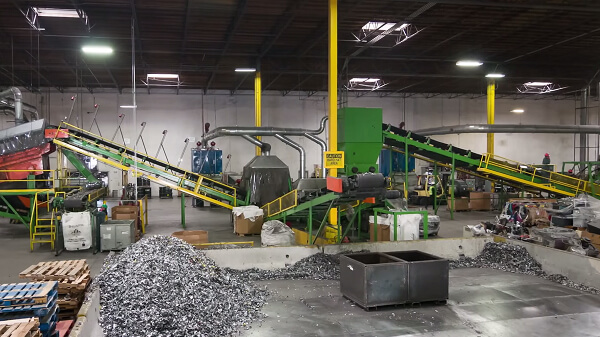
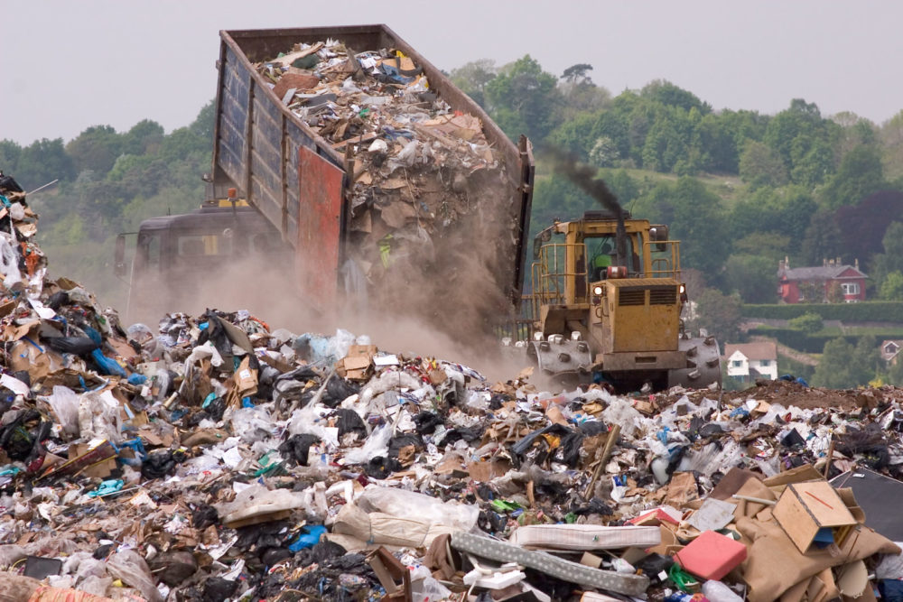

El plan de recolección en los Puntos de Reciclaje Urbano representa un paso fundamental para nuestra red de sustentabilidad ambiental vecinal. Mediante el acopio de aparatos electrónicos obsoletos o dañados, logramos estructurar un servicio de recepción gratuito que permite a los vecinos desechar componentes tecnológicos críticos, preparándolos eficazmente para reducir la contaminación ambiental cotidiana.
Ante los altos riesgos en el manejo de basura chatarra, estos puntos brindan respuestas rápidas para que las familias puedan separar, descartar y reciclar.
Los técnicos voluntarios participan activamente en jornadas de clasificación de materiales y ordenamiento de placas de circuitos impresos mediante criterios de economía circular. Aprenden a diagnosticar componentes útiles en equipos descartados, recuperar las carcasas de plástico duro y armar configuraciones seguras para derivar el material sobrante a las plantas de fundición autorizadas.
Esta iniciativa no solo alivia el impacto ambiental de los vertederos locales, sino que también evita la quema de plásticos disminuyendo drásticamente la generación de toxinas nocivas en los barrios del partido.
El proceso de trabajo requirió una tarea organizada entre municipios y vecinos para armar los cestos de acopio y clasificar aquellos repuestos útiles o guardados desordenadamente en los depósitos desde hace tiempo.
Luego de intensas semanas de recolección y testeos en las calles, el servicio quedó totalmente operativo y habilitado para recibir las solicitudes de retiro de empresas locales y centros educativos.
La comisión ambiental celebra la puesta en marcha de este nuevo espacio que transforma basura peligrosa en verdaderos recursos de inclusión social y remediación ecológica de calidad.

La comisión ambiental celebra la puesta en marcha de este nuevo espacio que transforma basura peligrosa en verdaderos recursos de inclusión social y remediación ecológica de calidad.
La organización del espacio verde contempló la instalación de diez contenedores de seguridad totalmente equipados con sistemas de sellado y medidores digitales. Se implementó una red de logística coordinada utilizando un camión de gran capacidad que asegura un transporte de carga fluido durante las tareas diarias de vaciado de puntos de acopio de basura.
Los operadores de las distintas áreas asumieron el compromiso de supervisar los procesos de desarme y clasificación de componentes dentro de la cooperativa. Esta labor práctica les permite aplicar conceptos avanzados de reciclaje, manejo de materiales peligrosos y normas de seguridad ambiental en un taller real, sumando un valor incalculable a su formación técnica antes de emprender sus propios proyectos ecológicos autónomos.
Uno de los propósitos más importantes de estos puntos es expandir su servicio más allá de la recolección material del local. Se planifica utilizar estas estructuras los sábados para dictar talleres básicos de ecología urbana dirigidos a jóvenes del barrio, promoviendo de este modo una verdadera salida laboral y comunitaria que fortalezca el empleo verde mediante la educación práctica de calidad.
A diferencia de los servicios de recolección convencionales tradicionales, este espacio promueve la utilización de circuitos recuperados para evitar el descarte de metales raros. Esto enseña a los futuros operarios a trabajar bajo criterios sustentables de economía circular, preparándolos para solucionar problemas de contaminación con ingenio sumamente práctico, eficiente y de bajo costo para los sectores populares de nuestra ciudad.
El comité coordinador organizó una nueva agenda de vaciado que distribuye el trabajo diario del camión según la saturación de los contenedores y demandas vecinales. Los técnicos destacan que contar con este stock de materiales clasificados agiliza notablemente la reutilización de partes, acortando las esperas y mejorando el servicio en los talleres de armado de computadoras formativas.
Para garantizar el abastecimiento de contenedores a lo largo del tiempo, se firmaron alianzas de recolección con grandes cadenas comerciales que instalarán centros de acopio en sus tiendas de forma solidaria. Este flujo de material reciclable asegura un suministro constante de partes para que las próximas camadas de técnicos voluntarios puedan seguir trabajando con herramientas variadas, manteniendo el proyecto provisto frente a las constantes demandas del sector ambiental.
El resultado obtenido en los Puntos de Reciclaje Electrónico demuestra que la unión entre ingenio popular, servicio social y herramientas técnicas puede producir respuestas eficientes. Este espacio no es simplemente un canasto con carcasas amontonadas; es una demostración real de las capacidades de nuestros vecinos cuando tienen el instrumental adecuado y la organización colectiva para diseñar soluciones de ayuda para su propia comunidad trabajadora.
Queremos manifestar un enorme reconocimiento a cada una de las personas que apuntalaron la apertura de estos nodos verdes. Desde los vecinos que aportaron sus materiales viejos hasta los electricistas que colaboraron con la logística de carga, cada aporte técnico resultó clave para levantar un proyecto que marcará un antes y un después en nuestra querida organización ambiental.
El horizonte de la institución contempla la meta de trasladar este exitoso formato de servicio a otros barrios de la zona que carecen de puntos de disposición ambiental accesibles. Sostenemos plenamente que la ecología debe compartirse, y nuestro grupo de promotores experimentados está totalmente dispuesto para asesorar a otros centros en la instalación de sus propios talleres.
El trabajo ecológico tiene la tarea colectiva de brindar soluciones prácticas a las complejidades materiales de la vida diaria. Con la consolidación de estos locales, reafirmamos nuestra voluntad inquebrantable con el desarrollo autónomo y la justicia social, demostrando que la soberanía ambiental se gestiona desde abajo, con esfuerzo diario, organización comunitaria y una mirada profundamente solidaria hacia el bienestar de nuestro querido suelo argentino.
Cada componente que se recupera en este punto de acopio representa una puerta abierta hacia la sustentabilidad urbana, la descontaminación de tierras y el ahorro de recursos naturales. Convocamos a todos los vecinos a acercarse, traer sus equipos y colaborar en las próximas jornadas de recolección de chatarra, porque la independencia verde de nuestras familias es un derecho colectivo que nos involucra a todos por igual.

Si trabajás en una empresa o querés donar un monitor roto que ya no utilices en tu casa, podés traerlo directamente a los encargados del puesto. Nuestra sede recibe televisores viejos, impresoras, baterías de notebooks y cables conectores que sean procesados por el equipo para seguir expandiendo este gran proyecto de remediación ambiental.
Nuestra meta para el próximo semestre es duplicar el volumen de metales recuperados y empezar a dictar clases de reciclaje a las escuelas secundarias de la zona. Este circuito productivo sigue creciendo y demuestra que el manejo de e-waste es la opción definitiva para lograr un acceso tecnológico que sea plenamente sustentable, beneficioso para todos y respetuoso del esfuerzo de nuestra gente.